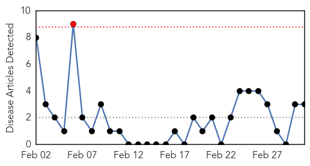
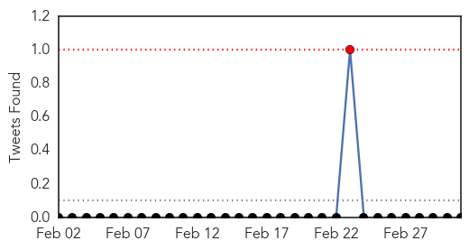

Chikungunya
30-Day Web Trend
1 alerts, 0 warnings

30-Day Twitter Trend
1 alerts, 0 warnings

Article Locations

Article Confidences

Top Articles:
Top Tweets:
-
No tweets found for Mar 03, 2015
Measles
30-Day Web Trend
5 alerts, 5 warnings

30-Day Twitter Trend
4 alerts, 0 warnings

Article Locations

Article Confidences

Top Articles:
- 0.981
- Anti-vax measles claim misinterprets data
- 0.958
- WHO calls for more measles vaccination in Europe as large outbreaks persist
- 0.945
- Public Health addresses measles and the importance of vaccinations
- 0.933
- 131 confirmed measles cases in California
- 0.926
- Vaccination saves lives
- 0.890
- WHO calls for more measles vaccination in Europe as large outbreaks persist
- 0.841
- Aliso Niguel High School
- 0.836
- Parents increasingly ask doctors to delay vaccines
- 0.821
- Oregon board endorses eliminating non-medical vaccine exemptions
- 0.813
- Study: Parents increasingly ask doctors to delay vaccines
- 0.759
- Could US measles outbreak reach NZ?
- 0.751
- Letter: Hype of measles worse than illness
- 0.750
- Could Syria really be polio free?
- 0.692
- Health officials perplexed by vaccination skeptics
- 0.592
- Health officials perplexed by vaccination skeptics
- 0.577
- The needless fallout – Vaccination
- 0.550
- Doctors Often Yield to Parents' Requests to Delay Kids' Vaccines
- 0.538
- Health officials perplexed by vaccination skeptics
- 0.519
- Health officials monitoring possible measles case
- 0.508
- Islamic Nation Fights Against Anti-Vaxxers: Starts Arresting Parents Who Object to Vaccinations
Top Tweets:
-
No tweets found for Mar 03, 2015